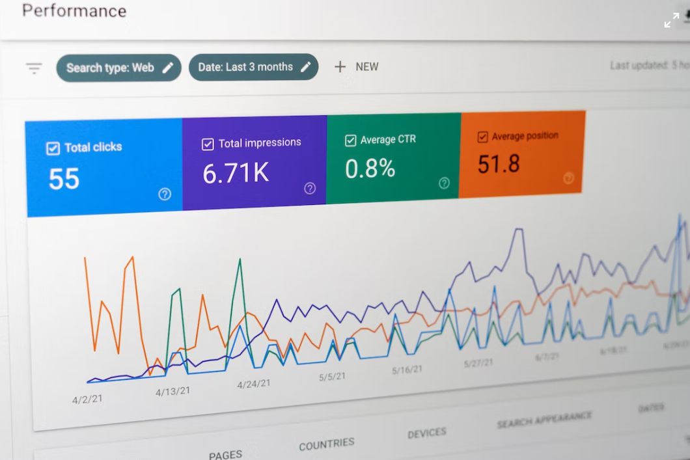

Według najnowszych danych GUS na dzień 30 czerwca 2021 roku Rzeszów zamieszkuje 198 476 mieszkańców[3][4]. Pod względem przyrostu liczby mieszkańców Rzeszów zajmuje trzecie miejsce, po Warszawie i Krakowie. Według danych na 30 czerwca 2021 Rzeszów jest 15. miastem Polski pod względem liczby ludności i 20. miastem Polski pod względem zajmowanej powierzchni.
Największą dotąd liczbę ludności miasto Rzeszów odnotowuje obecnie. Na dzień 31 grudnia 2021 roku (wg najnowszych danych GUS) w mieście zameldowanych jest 198 609 mieszkańców[4]. Władze miejskie szacują, że na terenie Rzeszowa w rzeczywistości mieszka około 300 tysięcy osób, łącznie z tymi, które nie są tu zameldowane oraz osobami narodowości ukraińskiej[70]. Jako osoby niezameldowane lecz mieszkające na terenie miasta Rzeszów nie generują oni należnych w miejscu zamieszkania podatków, co wpływa negatywnie na finanse miasta. Dlatego władze Rzeszowa prowadzą od wielu lat (w formie loterii) kampanię mającą na celu zachęcenie nowych mieszkańców do rozliczania podatku dochodowego w miejscu faktycznego zamieszkania (podobną kampanię prowadzi Wrocław).
| Rok | Populacja | Powierzchnia |
|---|---|---|
| 1951 | 28 133 | 39,06 km² |
| 1977 | 109 600 | 53,70 km² |
| 2008 | 170 653 | 91,54 km² |
| 2008 | 196 208 | 126,57 km² |
Wykłady odbędą się 30 października na głównej auli Politechniki Rzeszowskiej.
| Rozkład godzinowy | ||||||
|---|---|---|---|---|---|---|
| Godzina | Sektor 1 | Sektor 2 | Sektor 3 | Sektor 4 | Sektor 5 | Sektor 6 |
| 12:00 | LO nr 7 | LO nr 5 | SP nr 2 | |||
| 14:00 | LO nr 2 | SP nr 3 | SP nr 1 | LO nr 12 | ||
| 16:00 | LO nr 1 | LO nr 4 | SP nr 4 | LO nr 8 | ||